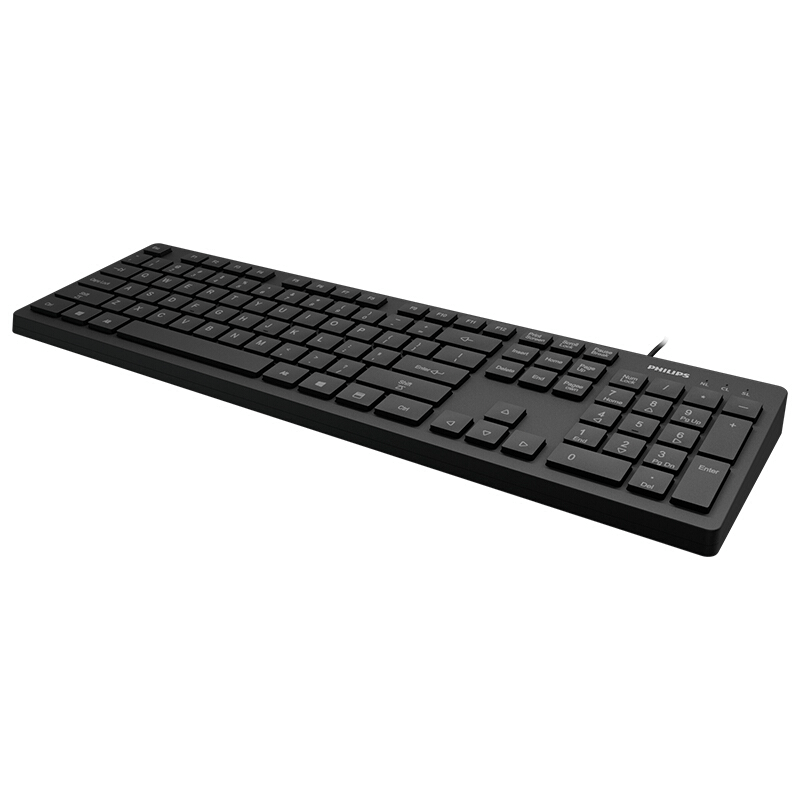

O teclado é um dos acessórios indispensáveis para a informática e para qualquer pessoa que utilize um computador, ele fornece uma série de atalhos para diversas funções, facilitando a realização das tarefas e consequentemente a melhora nos resultados produzidos a partir do computador.
 voltar